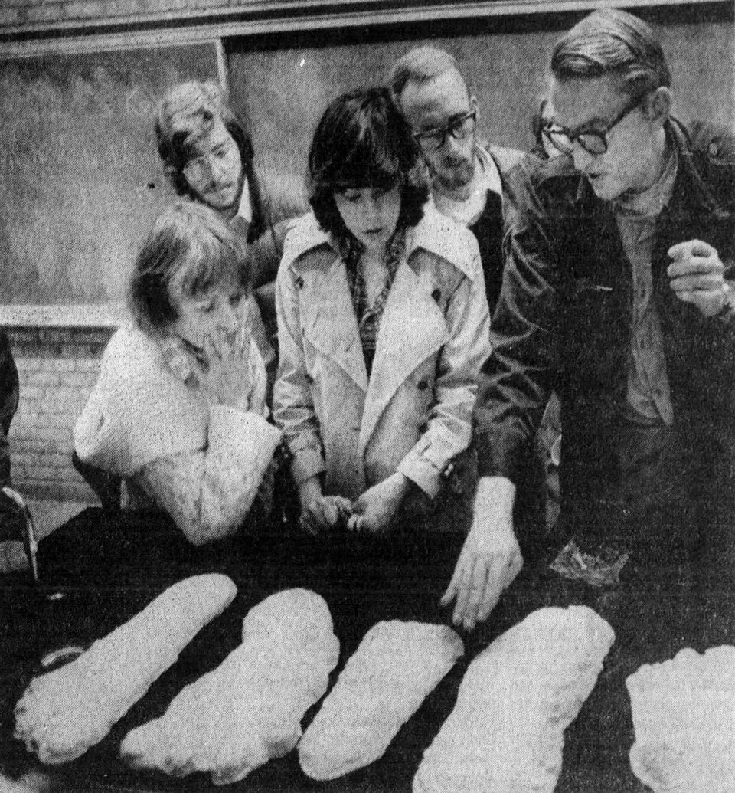

Небо · главное
Сорок тысяч свидетелей и один патент
Enigma Labs собирает сообщения о неопознанных объектах в воздухе. Заявка на изобретение, поданная компанией, описывает, как из нескольких таких сообщений вычислить, где объект находится и куда он летит.
Идея проста и симпатична: если достаточно много обычных людей будут смотреть в небо и записывать увиденное, рано или поздно среди тысяч снимков попадётся что-то настоящее. Enigma Labs продаёт именно это — приложение, куда свидетель отправляет фотографию, видео, время, координаты и короткий рассказ. По собственным данным компании, она приняла больше пятидесяти тысяч сообщений, а её расширенная база включает сотни тысяч исторических наблюдений, гражданских и военных.
Дальше стоит прочитать то, что написано мелким шрифтом. Политика конфиденциальности перечисляет, что приложение может собирать: IP-адрес, геолокацию, фотографии, идентификаторы устройства и показания датчиков — камеры, микрофона, акселерометра, магнитометра, лидара. Условия использования дают компании бессрочную, безвозмездную и всемирную лицензию на использование, изменение и распространение присланного материала для любой законной цели. Даже если свидетель удалит аккаунт, само наблюдение, по словам компании, может остаться в базе навсегда — в обезличенном виде.
Ни один из этих пунктов сам по себе не преступление: так устроены почти все приложения, и мало кто читает лицензионное соглашение до конца. Интерес начинается на стыке. Одно сообщение — это рассказ. Два сообщения об одном и том же объекте с разных точек, с точным временем, направлением съёмки и параметрами камеры, — это уже геометрия.
В феврале 2025 года была опубликована международная патентная заявка, закреплённая за Enigma Labs LLC. Название у неё не романтическое: «Определение положения, размера и/или траектории воздушного явления по нескольким записанным видео». Изобретатель — Питер Казазес, бывший технический директор и один из первых инженеров компании. В описании — синхронизация нескольких записей, триангуляция, стереосопоставление, положение камер и фокальные векторы, сглаживание, машинное обучение и подгонка трёхмерной формы. Иначе говоря, это не картотека для летающих тарелок, а способ превратить набор любительских съёмок в координаты и траекторию объекта в воздухе.
Номер заявки — WO2025038133A1, приоритетная дата — 14 августа 2023 года. Тут нужна аккуратность: заявка по процедуре PCT не даёт «всемирного патента» и сама по себе ничего не запрещает. Права возникают только там, где заявку довели до выдачи в отдельных странах и регионах. Компания не владеет небом. Важно другое: технологию извлечения координат и траектории из краудсорсинговых наблюдений в Enigma сочли интеллектуальной собственностью, которую стоит защищать.
Потом Казазес сменил работу. Он перешёл в Picogrid — оборонную компанию, которая строит системы, связывающие военные датчики, автономные платформы и пункты управления в одну картину. По сообщению о его найме, прежняя должность технического директора Enigma Labs упоминалась рядом с формулировкой о его опыте в распределённых системах и радиоэлектронной разведке; сейчас он числится ведущим системным архитектором Picogrid. Совпадение биографий ничего не доказывает. Но оно объясняет, зачем компании, собирающей фотографии неба, может понадобиться патент на вычисление траектории по множеству камер.
Автор разбора, опубликованного в UAP Files, идёт дальше и напоминает дату приоритета: 14 августа 2023 года. За три месяца до неё Дэвид Граш выступил с заявлениями о программах изучения аномальных объектов, появился законопроект о раскрытии материалов (UAP Disclosure Act), прошли слушания в Конгрессе. Совпадение по времени тоже ничего не доказывает — но заявку подают не в вакууме. В том же тексте упоминается, что среди старших советников New Vista числится Шон Киркпатрик, бывший директор Пентагоновского управления по разрешению аномалий (AARO).
Итог истории не в том, что «нам врали». Итог в механике: сообщество энтузиастов годами просило, чтобы кто-нибудь наконец собирал данные; сборщик нашёлся, данные собственные, права на них оформлены, а инженер, придумавший главную технологию, теперь работает там, где соединяют военные сенсоры. Свидетели при этом остаются свидетелями — и с приложением, которое они сами установили.
Коротко
- Что случилосьКомпания Enigma Labs, принимающая сообщения о неопознанных объектах в воздухе, владеет патентной заявкой на вычисление положения, размера и траектории объекта по нескольким видео.
- ДокументыЗаявка WO2025038133A1, публикация — февраль 2025, приоритет — 14.08.2023, изобретатель — Питер Казазес. Политика конфиденциальности и условия использования опубликованы на сайте компании.
- Цифры компанииБолее 50 000 присланных сообщений; расширенная база — сотни тысяч гражданских и военных наблюдений.
Что здесь факт, а что — версия
Факт: текст патентной заявки, пункты политики конфиденциальности и лицензии, переход инженера в оборонную компанию, имя бывшего директора AARO в совете другой фирмы. Это проверяемые документы и открытые биографии.
Версия: что данные собирают «против» свидетелей и что проект с самого начала задуман как военный. Автор разбора сам оговаривает, что ничего не доказывает, — и в этом его честность.
Редакционный вывод: механика стандартная и знакомая по другим сюжетам. Энтузиасты бесплатно создают датасет, датасет получает правовую защиту, защита уезжает вместе с инженером. Смотреть надо не на злой умысел, а на то, кому принадлежат права.
Архив
Второй материал · 5 минутПроклятие плёнки: умерла вдова охотника за Бигфутом
Пэт Паттерсон, вдова Роджера Паттерсона, умерла в 86 лет — меньше чем через месяц после выхода фильма, где её сын говорит, что плёнка 1967 года была подделкой.

Пэт Паттерсон было 86 лет. О её смерти сообщила страница семьи в соцсети, причину не называли; новость разошлась по соцсетям, а не по некрологам крупных изданий. Издание Daily Grail, написавшее о ней 12 ноября, честно помечает: сведения пока держатся на сообщении семьи.
История, в которой она оказалась пожизненно заперта, началась в 1967 году. Её муж Роджер Паттерсон и Боб Джимлин привезли из Калифорнии шестнадцатимиллиметровую плёнку с существом, которое до сих пор называют самым знаменитым доказательством существования «снежного человека» и самым знаменитым доказательством обратного. Кадры разобраны по пикселям, повторены десятками подражателей и до сих пор не имеют ни одного независимого подтверждения.
Меньше чем за месяц до её смерти вышел документальный фильм Марка Эванса «Capturing Bigfoot», где Паттерсона показывают как человека, сфабриковавшего съёмку. Эмоциональная ось фильма — её сын Клинт, который объявил, что собирается «рассказать правду», после чего мать не разговаривала с ним восемь лет. В финале они мирятся. Через несколько недель её не стало.
Сама Пэт в фильме произносит фразу, которую подхватили все: «Эта плёнка проклята». В контексте речь шла о вполне бытовых вещах — о деньгах, тяжбах и ссорах, которые снялись вокруг одного авторского права. Роджер Паттерсон умер через несколько лет после съёмки; теперь из двух героев того дня в живых остался один Боб Джимлин.
Соблазн очевиден: сложить смерть пожилой женщины, смерть её мужа полвека назад и скандал вокруг плёнки в аккуратное «проклятие». Издание, написавшее о ней, само от этого удерживается — и в том же тексте упрекает авторов фильма в том, что они подошли слишком близко к черте между честным разбором событий и использованием живых людей ради сюжета. Это оценка журналиста, а не факт, но оценка по делу.
Что здесь подтверждено: смерть в 86 лет, выход фильма, восьмилетняя ссора, фраза о проклятии, авторское право на плёнку как источник дохода семьи. Что не подтверждено ничем, кроме рассказов: подлинность существа на кадрах, точные мотивы каждого участника и, разумеется, само проклятие. Проклятие — это не свойство плёнки. Это способ, которым семья полвека объясняет цену одной удачной съёмки.
Былички
Заметка · 3 минутыСобака узнала первой
Житель Форт-Уэрта рассказывает про дом 1911 года, миску, которая крутится сама, и игрушечный мячик, отвечающий на вопросы.
Брайан Бейтман из Форт-Уэрта (Техас) поселился с женой в доме 1911 года постройки в историческом районе Фэрмаунт 4 февраля 2024 года. С первой ночи, пишет он, собака отказалась спать в спальне хозяев — и отказывается до сих пор. Дальше по списку: миска собаки крутанулась на кухонном полу на глазах у жены, шторы отдёрнулись сами, по дому летали «сферы», которые он снимал на видео.
Отдельного упоминания стоит главный прибор в этом арсенале — светящийся кошачий мячик, который, по словам автора, загорается, когда ему задают вопросы. Это классика жанра: предмет с кнопкой и слабой батарейкой, реагирующий на движение воздуха, вибрацию или наклон, в руках задающего вопросы превращается в собеседника. Ответ всегда один и тот же — «да», если вопрос задан с надеждой.
Автор подчёркивает, что у него есть документы: пятеро умерших в этом доме между 1914 и 2023 годом, включая женщину, умершую на Хэллоуин. Дом, которому больше ста лет, вообще-то и должен накопить несколько смертей — это арифметика, а не аномалия. Про «задокументированные убийства, самоубийства, пожары и взрыв на одной улице» он обещает рассказать в другой раз, и вот это уже обещание, а не факт.
Что здесь есть: связный рассказ очевидца с датами и адресом района. Чего нет: ни одного независимого подтверждения — ни записей, ни показаний соседей, ни проверки документов. Газета держит такие истории в рубрике «былички» именно поэтому: они интересны как рассказ, а не как доказательство.
Лаборатория
Заметка · 3 минутыКто слышит голоса и почему
Исследование в итальянских клиниках: у тяжёлых потребителей каннабиса чаще встречаются лёгкие слуховые и телесные аномалии — но причину и следствие здесь не развести.
Семь–тринадцать процентов людей хотя бы раз в жизни испытывали то, что психиатры называют подпороговыми психотическими переживаниями: мимолётную паранойю, шёпот на грани слышимости, ощущение, что мысли читают, или странную отделённость от собственного тела. Это не диагноз и в большинстве случаев ни во что не разворачивается.
Группа Валерио Риччи из Туринского университета набрала 150 человек от 18 до 40 лет в итальянских психиатрических клиниках — с тревогой или расстройством настроения, но без психоза и без психоза у ближайших родственников. Тяжёлая группа (43 человека) употребляла каннабис пять и более дней в неделю, в среднем 2,8 грамма в день. Умеренная (47 человек) — один-четыре раза в месяц, около 3,2 грамма за месяц. Контрольная группа (60 человек) не употребляла вовсе; привычки проверяли анализом мочи, а симптомы — стандартной шкалой CAPE.
У тяжёлых потребителей баллы по «позитивным» переживаниям и по депрессивным симптомам оказались заметно выше, чем у двух других групп; чем чаще употребление, тем сильнее выраженность. Начавшие раньше 16,4 года показывали более высокие баллы. По «негативным» симптомам — апатии, эмоциональной уплощённости — разницы между группами не нашли.
Границы исследования честно обозначены: это срез, а не наблюдение во времени, поэтому направление связи неизвестно. Вполне возможно, что люди с более выраженными переживаниями просто чаще употребляют — как способ справиться с ними. Для газеты здесь важен не каннабис, а фон: слуховые и телесные аномалии — не редкость и не признак избранности, а широкий спектр, в котором большинство остаётся на светлой стороне.
Архив
Заметка · 2 минутыСоветник для юного рыцаря, 1460
Public Domain Review выложил миниатюры из «Послания Офеи» Кристины Пизанской — книги наставлений, где мифы служат моральными примерами.
Кристина Пизанская написала «Послание Офеи» около 1400 года как письмо юному рыцарю: сто коротких текстов, к каждому — стих, аллегорическое толкование и цитата из Писания. Герои — троянцы, греки и прочие фигуры античного мифа, которые должны были читаться не как литература, а как набор нравственных случаев. Рукопись около 1460 года, миниатюры которой теперь оцифрованы, показывает, как это выглядело в краске и золоте.
Аномального здесь нет — есть механика, ради которой такие вещи и стоит смотреть. Средневековый читатель видел в изображении войны и мифа не сюжет, а шифр: за фигурой стояло поучение, за поучением — мораль. Привычка искать второй смысл за картинкой никуда не делась; она просто сменила объект. Смотреть на миниатюры XV века полезно ровно для этого — чтобы увидеть, как аккуратно и намеренно люди умели вчитывать смысл в изображение.
Небо
Заметка · 2 минутыСветовые сутки от дома
18 ноября 2026 года «Вояджер-1» стал первым рукотворным объектом на расстоянии одних световых суток от Земли.
Световые сутки — это путь, который свет проходит за 24 часа: около 25,9 миллиарда километров. Столько теперь от Земли до аппарата, запущенного в 1977 году и до сих пор передающего данные. Сигнал в одну сторону идёт сутки; ответа на вопрос, отправленный сегодня, придётся ждать послезавтра.
В рубрике «Небо» это уместно по другой причине. Любая фотография ночного неба — это всегда снимок прошлого: мы видим объект таким, каким он был, когда испустил свет. «Вояджер» сделал эту банальность наглядной до неприличия: аппарат, который мы видим в телеметрии, уже сутки как не тот, что был. Аномалия здесь не в объекте, а в самой единице измерения — сутки как мера пустоты.